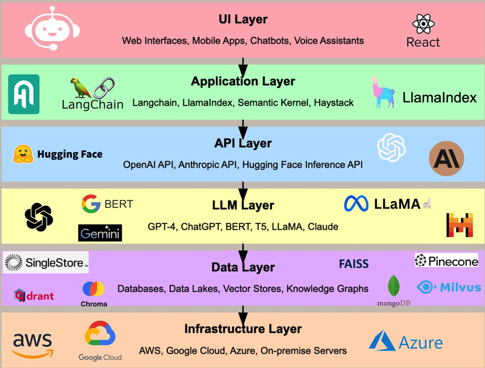

The Generative AI Tech Stack#
Duration: 15 minutes reading
Learning Objectives:
Understand the layered architecture of generative AI systems
Identify which layers are most relevant for finance practitioners
Map course topics to the appropriate stack layers
Build intuition for where different tools and frameworks fit
Why Understanding the Stack Matters#
Before diving into LLM applications in finance, it helps to have a mental map of the technology landscape. The generative AI ecosystem has matured rapidly, and understanding its architecture helps you:
Choose the right tools for each problem
Understand trade-offs between build vs. buy decisions
Communicate effectively with engineering teams
Identify opportunities where AI can add value
Think of it like understanding how the financial system works before trading in it—you need to know where exchanges, brokers, and clearing houses fit before you can effectively participate.
The Emerging Tech Stack#

Source: Image by Pavan Belagatti, The Emerging Generative AI Tech Stack X
This diagram illustrates the layered architecture of generative AI systems. Let’s work through each layer from bottom to top.
Layer-by-Layer Breakdown#
1. Infrastructure Layer (Cloud Providers)#
What it is: AWS, Azure, Google Cloud—the compute and storage backbone.
For practitioners: You won’t interact with this layer directly. Cloud infrastructure is abstracted away by the API providers and application frameworks you’ll use. However, understanding that GPU compute is expensive and scarce helps explain API pricing and rate limits.
Key insight: When OpenAI or Anthropic has capacity issues, it’s often at this layer.
2. Data Layer (Vector Stores & Databases)#
What it is: Specialized databases for storing embeddings (vector stores like Pinecone, Weaviate, Chroma) plus traditional databases for structured data.
For practitioners: This layer becomes critical when building RAG (Retrieval-Augmented Generation) systems. When you want an LLM to answer questions about your firm’s proprietary research or SEC filings, you’ll store document embeddings here.
Course coverage: Week 4 (RAG)
Tool |
Type |
Use Case |
|---|---|---|
Pinecone |
Managed vector DB |
Production RAG systems |
Chroma |
Local vector DB |
Prototyping, small datasets |
PostgreSQL + pgvector |
Relational + vector |
Hybrid structured/unstructured |
3. LLM Layer (Foundation Models)#
What it is: The large language models themselves—GPT-4, Claude, Gemini, LLaMA, and others.
For practitioners: Model selection is one of your most important decisions. Different models have different strengths, costs, and licensing terms.
Course coverage: Throughout, especially Week 1
Model |
Provider |
Strengths |
Best For |
|---|---|---|---|
GPT-4o |
OpenAI |
Strong reasoning, multimodal |
Complex analysis, vision tasks |
GPT-4o-mini |
OpenAI |
Fast, cheap, good quality |
High-volume processing, prototyping |
Claude 3.5 Sonnet |
Anthropic |
Long context, coding |
Document analysis, code generation |
Gemini 1.5 |
Very long context (1M tokens) |
Processing full documents |
|
LLaMA 3 |
Meta |
Open source, customizable |
On-premise, fine-tuning |
Key trade-off: Frontier models (GPT-4o, Claude 3.5) are more capable but expensive. For high-volume tasks like processing thousands of headlines, cheaper models like GPT-4o-mini may be sufficient—the Lopez-Lira & Tang paper finding that “scale matters” suggests testing this empirically.
4. API Layer (Model Access)#
What it is: The programmatic interfaces that let you call LLMs—OpenAI API, Anthropic API, OpenRouter, together.ai.
For practitioners: This is where you’ll spend most of your time. Understanding API patterns, rate limits, and cost structures is essential.
Course coverage: Week 1-2
# The core pattern you'll use throughout the course
from openai import OpenAI
client = OpenAI()
response = client.chat.completions.create(
model="gpt-4o-mini",
messages=[
{"role": "system", "content": "You are a financial analyst."},
{"role": "user", "content": "Analyze this headline: ..."}
]
)
Key services:
OpenAI API — Industry standard, most documentation and examples
Anthropic API — Claude models, strong for coding and analysis
OpenRouter — Aggregator that provides access to many models through one interface
together.ai — Cost-effective access to open-source models
5. Application Layer (Frameworks & Tools)#
What it is: Libraries and frameworks that help you build applications—LangChain, LangGraph, LlamaIndex, and specialized tools.
For practitioners: These frameworks handle common patterns like prompt chaining, tool use, and agent orchestration. They save you from reinventing the wheel but add complexity.
Course coverage: Week 2-3 (Agents, Tool Use)
Framework |
Purpose |
When to Use |
|---|---|---|
LangChain |
General LLM orchestration |
Multi-step workflows, RAG |
LangGraph |
Agent state machines |
Complex agents with branching logic |
LlamaIndex |
Data indexing for RAG |
Document Q&A systems |
Instructor |
Structured outputs |
Extracting typed data from LLMs |
Key insight: Start simple. Many tasks don’t need a framework—direct API calls suffice. Add frameworks when you need their specific features.
6. UI Layer (User Interfaces)#
What it is: The applications users interact with—ChatGPT, Claude.ai, Cursor, custom web apps.
For practitioners: You’ll use these tools daily and eventually build your own. Understanding what’s possible at this layer helps you scope projects.
Course coverage: Week 1 (Copilots), Week 5 (App Development)
Tool |
Type |
Use Case |
|---|---|---|
ChatGPT |
General chat |
Ad-hoc analysis, brainstorming |
General chat |
Long document analysis |
|
Cursor |
Code editor |
AI-assisted development |
Claude Code |
CLI tool |
Agentic coding in terminal |
Custom apps |
Your builds |
Domain-specific workflows |
How the Stack Comes Together: A Finance Example#
Let’s trace a concrete workflow through the stack. Imagine you’re building a system to analyze earnings call transcripts:
UI Layer: Analyst opens your custom dashboard and uploads Q4 earnings call PDF
Application Layer: LangChain orchestrates the workflow:
Extract text from PDF
Chunk into passages
Generate embeddings
Store and retrieve relevant sections
API Layer: Your app calls OpenAI’s API to:
Generate embeddings (
text-embedding-3-small)Analyze retrieved passages (
gpt-4o)
LLM Layer: GPT-4o processes the context and generates insights about revenue guidance, management tone, and risk factors
Data Layer: Chroma stores the document embeddings for future queries
Infrastructure Layer: All compute runs on cloud infrastructure (abstracted away)
The analyst sees a clean interface; the stack handles the complexity.
Where This Course Focuses#
This course emphasizes the layers where practitioners spend most of their time:
Week |
Topic |
Primary Stack Layers |
|---|---|---|
1 |
AI Dev Tools & Copilots |
UI, API |
2 |
Tool Use & Agents |
Application, API |
3 |
LLM Fundamentals |
LLM, API |
4 |
RAG |
Data, Application |
5 |
AI App Development |
UI, Application |
6 |
Governance & Evaluation |
All layers |
We spend less time on infrastructure (cloud providers) since it’s abstracted away, and more time on the layers where you’ll make decisions and write code.
Key Takeaways#
The stack is layered: Each layer builds on the one below. You don’t need to understand GPU architecture to use GPT-4, but understanding the layers helps you debug and optimize.
APIs are your main interface: Most practitioners interact with LLMs through APIs, not by running models locally.
Frameworks help but add complexity: LangChain and similar tools are valuable for complex workflows but overkill for simple tasks. Start with raw API calls.
Model selection matters: Different models for different tasks. GPT-4o for quality, GPT-4o-mini for volume, open-source for privacy.
The stack is evolving rapidly: New tools emerge weekly. The conceptual layers remain stable even as specific tools change.
Quick Exercise (2 minutes)#
Map each tool to its primary stack layer:
Tool |
Your Answer |
|---|---|
Pinecone |
|
Claude 3.5 Sonnet |
|
LangChain |
|
OpenAI API |
|
Cursor |
Check your answers
Tool |
Layer |
|---|---|
Pinecone |
Data (Vector Store) |
Claude 3.5 Sonnet |
LLM (Foundation Model) |
LangChain |
Application (Framework) |
OpenAI API |
API |
Cursor |
UI |
Next Steps#
Now that you have a mental map of the generative AI landscape, let’s see how these technologies are transforming quantitative finance. Continue to LLMs Transforming Finance: The New Quant.